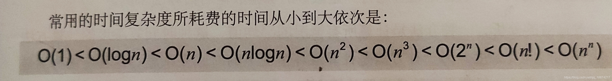

数据结构学习——排序
排序笔记🎈，排序很重要呀！
复杂度比较
| 排序算法 | 时间复杂度（平均） | 时间复杂度(最坏) | 时间复杂度(最好) | 空间复杂度 | 稳定性 |
|---|---|---|---|---|---|
| 冒泡排序 | O(n²) | O(n²) | O(n) | O(1) | 稳定 |
| 选择排序 | O(n²) | O(n²) | O(n²) | O(1) | 不稳定 |
| 插入排序 | O(n²) | O(n²) | O(n) | O(1) | 稳定 |
| 希尔排序 | O(n^1.5) | O(n²) | O(n) | O(1) | 不稳定 |
| 快速排序 | O(n log₂ n) | O(n²) | O(n log₂ n) | O(n log₂ n) | 不稳定 |
| 归并排序 | O(n log₂ n) | O(n log₂ n) | O(n log₂ n) | O(n) | 稳定 |
| 堆排序 | O(n log₂ n) | O(n log₂ n) | O(n log₂ n) | O(1) | 不稳定 |

1.冒泡排序
算法步骤
- 比较相邻的元素。如果第一个比第二个大，就交换他们两个。
- 对每一对相邻元素作同样的工作，从开始第一对到结尾的最后一对。这步做完后，最后的元素会是最大的数。
- 针对所有的元素重复以上的步骤，除了最后一个。
- 持续每次对越来越少的元素重复上面的步骤，直到没有任何一对数字需要比较。
动画演示

代码演示
```c
#include<stdio.h>
/*
函数功能：冒泡排序
函数参数：
a:目标数组
n:数组内元素个数
*/
void BuddleSort(int a[],int n) {
for(int i=0 ; i<n ; i++){
for(int j=0 ; j<n-i-1 ; j++){
if(a[j]>a[j+1]){
int swap=a[j];
a[j]=a[j+1];
a[j+1]=swap;
}
}
}
}
int main(void) {
int a[]={6, 9, 8, 4, 5, 2, 1, 3, 7};
int n=sizeof(a)/sizeof(int);
BuddleSort(a,n);
printf(“冒泡排序结果：”);
for (int i = 0 ; i < n ; i++){
printf("%d ", a[i]);
}
return 0;
}
# 2.简单选择排序
### 算法步骤
- 首先在未排序序列中找到最小（大）元素，存放到排序序列的起始位置 。
- 再从剩余未排序元素中继续寻找最小（大）元素，然后放到已排序序列的末尾。
- 重复第二步，直到所有元素均排序完毕。
### 动画演示

### 代码演示
```c
#include<stdio.h>
/*
函数功能：简单选择排序
函数参数：
a:目标数组
n:数组内元素个数
*/
void SelectSort(int a[],int n) {
for(int i=0;i<n-1;i++){
int min=i; //存放数组最小值的位置
for(int j=i+1;j<n;j++){
if(a[j]<a[min]){
min=j; //找出最小值，并记录位置
}
}
if(min!=i) {//最小元素与第i个元素互换位置
int swap=a[min];
a[min]=a[i];
a[i]=swap;
}
}
}
int main(void) {
int a[]={8,9,7,1,5,4,2,3,6};
int n=sizeof(a)/sizeof(int);
SelectSort(a,n);
printf("选择排序结果：");
for (int i = 0; i < n; i++){
printf("%d ", a[i]);
}
printf("\n");
return 0;
}
3.直接插入排序
算法步骤
- 从第一个元素开始，该元素可以认为已经被排序；
- 取出下一个元素，在已经排序的元素序列中从后向前扫描；
- 如果该元素（已排序）大于新元素，将该元素移到下一位置；
- 重复步骤3，直到找到已排序的元素小于或者等于新元素的位置；
- 将新元素插入到该位置后；
- 重复步骤2~5，直到所有元素完成排序。
动画演示

代码演示
```c
#include<stdio.h>
/*
函数功能：直接插入排序
函数参数：
a:目标数组
n:数组内元素个数
*/
void InsertSort(int a[],int n) {
for(int i=0 ; i<n ; i++) {
int j=i-1;
if(a[i]<a[i-1]) { //若第i个元素小于第i-1个元素,移动有序序列插入——大于的话则直接插入
int swap=a[i]; //存储将要排序的元素
a[i]=a[i-1]; //向后移动一个元素
while(swap < a[j]) {//查询将要插入的位置
a[j+1]=a[j];
j--; //元素后移
}
a[j+1]=swap;//循环结束 插入到指定位置
}
}
}
int main(void) {
int a[] = { 9,7,8,2,5,1,3,6,4};
int n = sizeof(a)/sizeof(int);
InsertSort(a, n);
printf(“排序好的数组为：”);
for (int i=0 ; i<n ; i++) {
printf(“%d”, a[i]);
}
printf(“\n”);
return 0;
}
# 4.希尔排序
### 算法步骤
- 选择一个增量序列 t1，t2，……，tk，其中 ti > tj, tk = 1。
- 按增量序列个数 k，对序列进行 k 趟排序。
- 每趟排序，根据对应的增量 ti，将待排序列分割成若干长度为 m 的子序列，分别对各子表进行直接插入排序。仅增量因子为 1 时，整个序列作为一个表来处理，表长度即为整个序列的长度。
### 动画演示

### 代码演示
```c
#include <stdio.h>
#include <malloc.h>
/*
函数功能：希尔排序
函数参数：
a:动态定义数组，同目标数组
len:数组内元素个数（通过输入到的a元素个数来确定len的值）
*/
void Shell_sort(int *a, int len)
{
int i;
int j;
int temp;
int gap; //步长
for (gap = len / 2; gap >= 1; gap /= 2) { // 步长初始化为数组长度的一半，每次遍历后步长减半
for (i = 0 + gap; i < len; i += gap) { //对步长为gap的元素进行直插排序，当gap为1时，就是直插排序
temp = a[i]; //备份a[i]的值
j = i - gap; //j初始化为i的前一个元素（与i相差gap长度）
while (j >= 0 && a[j] > temp) {
a[j + gap] = a[j]; //将在a[i]前且比temp的值大的元素向后移动一位
j -= gap;
}
a[j + gap] = temp;
}
}
}
int main(void)
{
int i;
int len;
int * a;
printf("请输入要排的数的个数：");
scanf("%d",&len);
a = (int *)malloc(len * sizeof(int)); // 动态定义数组
printf("请输入要排的数：\n");
for (i = 0; i < len; i++) { //数组值的输入
scanf("%d",&a[i]);
}
Shell_sort(a, len); //调用希尔排序函数
printf("希尔升序排列后结果为：\n");
for (i = 0; i < len; i++) { //排序后的结果的输出
printf("%d\t",a[i]);
}
printf("\n");
return 0;
}
5.归并排序
算法步骤

代码演示
递归实现
#include <stdio.h>
#include <stdlib.h>
#include <string.h>
/*
函数功能：合并
函数参数：
arr: 目标数组
start: 待合并段开始下标
mid: 待合并段中间下标
end: 待合并段结束下标
*/
void merge(int* arr, int start, int mid, int end)
{
int len_l, len_r; //左右待合并区间的长度
len_l = mid - start + 1;
len_r = end - mid;
int l[len_l], r[len_r]; //gcc, 两个临时数组，分别保存待合并的两个区间
//int l[100], r[100]; //vc
memcpy(l, arr + start, sizeof(int) * len_l);
memcpy(r, arr + mid + 1, sizeof(int) * len_r);
int i = 0, j = 0, k = start;
while(i < len_l && j < len_r)
{
arr[k++] = l[i] < r[j] ? l[i++] : r[j++];
}
while(i < len_l)
{
arr[k++] = l[i++];
}
}
/*
函数功能：归并排序
函数参数：
arr: 待排序的数组
start: 待排序数组开始下标
end: 待排序数组结束下标
*/
void merge_sort(int* arr, int start, int end)
{
if(start < end)
{
int mid = (start + end) / 2;
//归
merge_sort(arr, start, mid);
merge_sort(arr, mid + 1, end);
//并
merge(arr, start, mid, end);
}
}
int main()
{
int arr[11] = {-1, 2, 4, -12, 4, 0, 0, 12, 23, -4, 7000};
merge_sort(arr, 0, 10);
for(int i = 0; i < 11; ++i)
{
printf("%d ", arr[i]);
}
printf("\n");
return 0;
}
非递归实现
#include <stdio.h>
#include <stdlib.h>
#include <string.h>
/*
函数功能：归并排序
函数参数：
arr: 待排序的数组
length: 该数组的长度
*/
void merge_sort(int* arr, int length)
{
int step = 1; //归并区间步长
int l[length], r[length]; //gcc, 两个临时数组，分别保存待归并的两个区间
//int l[100], r[100]; //vc
while(step < length)
{
int start = 0; //归并区间的开始下标
while(start < length - step)
{
//归
int len_l, len_r; //左右待归并区间的长度
len_l = len_r = step;
memcpy(l, arr + start, sizeof(int) * len_l);
if(start + 2 * step > length)
{
len_r = length - start - step;
}
memcpy(r, arr + start + step, sizeof(int) * len_r);
//并
int i = 0, j = 0, k = start;
while(i < len_l && j < len_r)
{
arr[k++] = l[i] < r[j] ? l[i++] : r[j++];
}
while(i < len_l)
{
arr[k++] = l[i++];
}
start += 2 * step;
}
step *= 2;
}
}
int main()
{
int arr[11] = {-1, 2, 4, -12, 4, 0, 0, 12, 23, -4, 7000};
merge_sort(arr, 11);
for(int i = 0; i < 11; ++i)
{
printf("%d ", arr[i]);
}
printf("\n");
return 0;
}
6.快速排序
算法步骤
- 从数列中挑出一个元素，称为 “基准”（pivot）。
- 重新排序数列，所有元素比基准值小的摆放在基准前面，所有元素比基准值大的摆在基准的后面（相同的数可以到任一边）。在这个分区退出之后，该基准就处于数列的中间位置。这个称为分区（partition）操作 。
- 递归地（recursive）把小于基准值元素的子数列和大于基准值元素的子数列排序 。
动画演示

代码演示
#include <stdio.h>
#include <string.h>
int a[100 + 1];
/*
函数功能：快速排序
函数参数：
l:1
r:数组内元素个数
a:目标数组
*/
void quickSort(int l, int r, int a[]) {
int i = l, j = r; int mid = (i + r) / 2;
do {
while (a[i] < a[mid]) ++i;//循环结束时，a[i] >= a[mid]
while (a[mid] < a[j]) --j;//循环结束时，a[j] <= a[mid]
if (i <= j) {
int temp = a[i];
a[i] = a[j];
a[j] = temp; ++i; --j;//交换数值后继续搜索
}
} while (i <= j);//我们需要结束时i > j
if (l < j) quickSort(l, j, a);
//若未找到两个数的边界，则递归搜索左右区间。l < j则j - l > 0
//即l与j之间还有数字可以继续
if (i < r) quickSort(i, r, a);
}
int main(void) {
int n;
memset(a, 0, sizeof(a));
printf("请输入你要排序多少个数：");
scanf("%d", &n); printf("\n请输入这%d个数字\n", n);
for (int i = 1; i <= n; ++i) {
scanf("%d", a + i);
}
quickSort(1, n, a);
for (int i = 1; i <= n; ++i) {
printf("%d ", a[i]);
}
printf("\n");
return 0;
}
7.堆排序
算法步骤
- 将初始待排序关键字序列(R1,R2….Rn)构建成大顶堆，此堆为初始的无序区；
- 将堆顶元素R[1]与最后一个元素R[n]交换，此时得到新的无序区(R1,R2,……Rn-1)和新的有序区(Rn),且满足R[1,2…n-1]<=R[n]；
- 由于交换后新的堆顶R[1]可能违反堆的性质，因此需要对当前无序区(R1,R2,……Rn-1)调整为新堆，然后再次将R[1]与无序区最后一个元素交换，得到新的无序区(R1,R2….Rn-2)和新的有序区(Rn-1,Rn)。
- 不断重复过程3直到有序区的元素个数为n-1（无序堆为的元素个数为1），则整个排序过程完成。
动画演示

代码演示